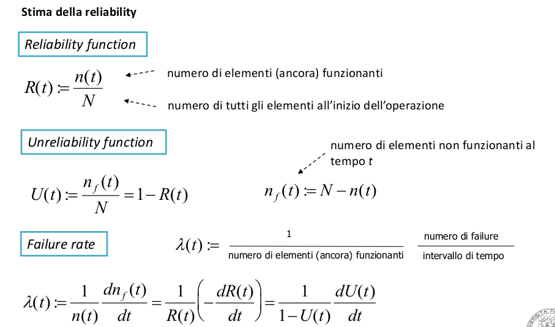

Reliability(AFFIDABILITÀ): capacità di un sistema di realizzare unafunzione richiesta sotto specifiche condizione e in un dato periodo di tempo- può essere affetta da malfunction e failure
- una sua misura può essere il MMTF

curva a vasca da bagno del failure rate:

se il failure rate è costante la reliability function ha un andamento esponenziale


Connessione in serie


Maintainance(manutenzione): insieme di azioni necesssarie a mantenere o far tornare un sistema nelle sue condizioni operative
Maintainability(manutenibilità):è l'insieme delle qualità di un sistema che servono a garantire la sua maintenance